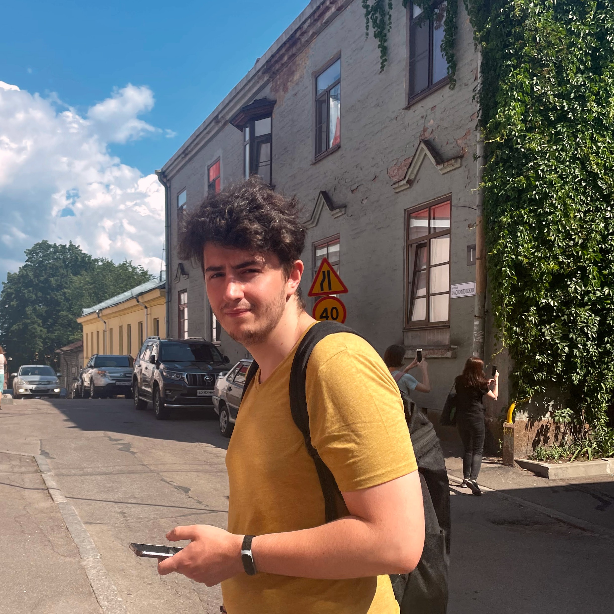

Artem Ponomarenko
Data Analyst · Munich, Germany
I'm experienced in large-scale analytics and ETL pipelines, turning messy data into insights that actually get used.
Also I have strong background in applied math and ML. I run experiments, build forecasts, and fix data pipelines that keep breaking.
Skills & Tools
Programming & ML
Python (Pandas, Polars, Scikit-learn, CatBoost, PyTorch), SQL, R
Big Data & Pipelines
Spark, Hadoop, YTsaurus, Airflow, dbt
Analytics & BI
A/B Testing, Statistical Modeling, Forecasting, Tableau, Superset, Redash
Databases
ClickHouse, PostgreSQL, Vertica, SQLAlchemy
DevOps
Docker, Git, CI/CD, Bash
Languages
English (C1), German (A2), Russian (Native)
Experience
VK
Data Analyst · Nov 2023 – Sep 2025
Worked on user-matching at massive scale, handled billions of nodes across platforms. Ran experiments with product and ML teams to improve ad targeting. Built a sociodemographic data mart that became the go-to source for ML and ads teams. Automated NPS reporting so nobody had to do it by hand anymore.
CRPT (Chestny Znak)
Data Analyst · Sep 2022 – Nov 2023
Built demand forecasts with Prophet that cut errors. Set up Redash + Airflow to monitor 30+ datasets and auto-fix when things broke. Sped up the slowest SQL reports by up to 40% so dashboards stopped timing out.
Projects
Lunapark
AI-powered CV–vacancy matcher using fine-tuned LLMs, FastAPI backend and Streamlit frontend for analyzing candidates and matching them to job openings.
IVAN
Interactive Venture Analysis Network. LLM-powered agent that helps manage financial portfolios. It tracks stocks and crypto, analyzes news with BM25, and sends recommendations via Telegram.
SmatcheD
Streamlit web app for transferring makeup from one photo to another using Stable Diffusion.
Education
Katholische Universität Eichstätt-Ingolstadt
M.Sc. in Data Science · 2025 · Germany
ITMO University
M.Sc. in Artificial Intelligence · 2023 – 2025 · Saint Petersburg
Saint Petersburg State University
B.Sc. in Applied Mathematics and Computer Science · 2018 – 2022 · Saint Petersburg
Get in touch
Open to new opportunities and collaborations.